En esta clase, crearás una app que muestra un personaje que cambia su estado de ánimo (normal, feliz, aburrido, triste) al interactuar con diferentes acciones, como darle comida, hacer que estudie o darle una nota baja.
En esta clase, desarrollarás una aplicación en App Inventor donde un personaje reacciona a tus acciones. Usa botones para darle comida (se pone feliz), hacerlo estudiar (se aburre), o darle una nota baja (se pone triste). Un contador registrará las acciones, y podrás reiniciar el estado. Aprenderás a usar imágenes, eventos, lógica condicional y sonidos.
El componente Imagen permite mostrar imágenes en la pantalla. Lo encontrarás en la paleta "Interfaz de Usuario" del diseñador.
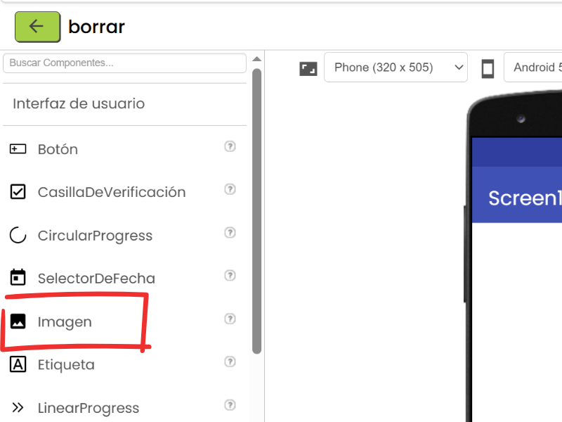
El evento .Click se activa al presionar un botón. Está en la sección de bloques del componente Botón.
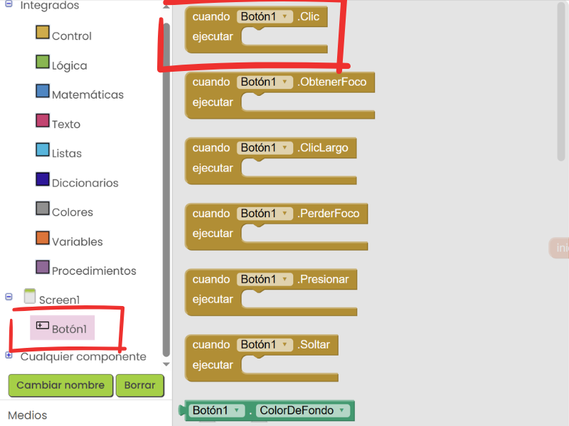
El bloque si-entonces permite ejecutar diferentes acciones según una condición. Está en la categoría "Control" de los bloques.
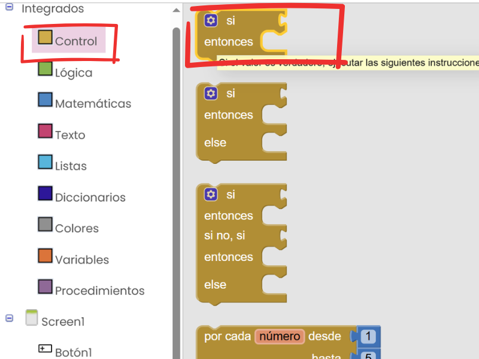
ReaccionesApp.
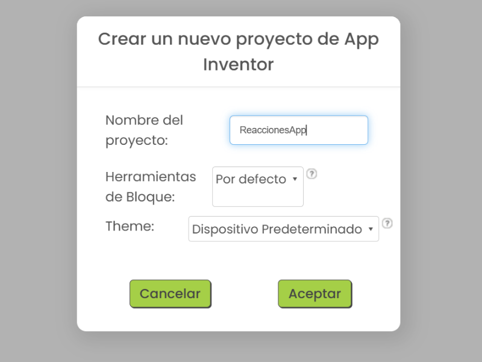
BotónComida (texto: "Comida"), BotónEstudiar (texto: "Estudiar"), BotónNota (texto: "Nota Matemática"), y BotónReiniciar (texto: "Reiniciar").
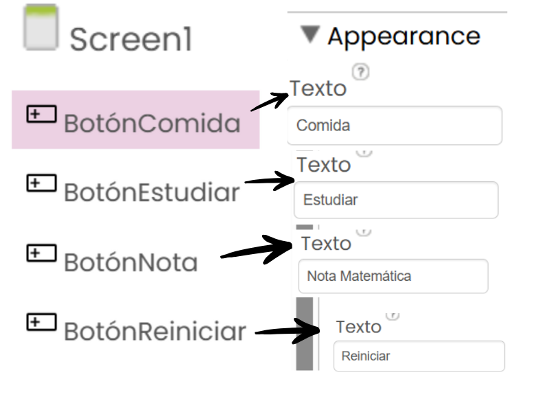
normal.jpg, feliz.jpg, aburrido.jpg, triste.jpg, y los sonidos que elijas para cada cambio, por ejemplo yo subí: neutro.mp3, risa.mp3, bostezo.mp3, llanto.mp3.
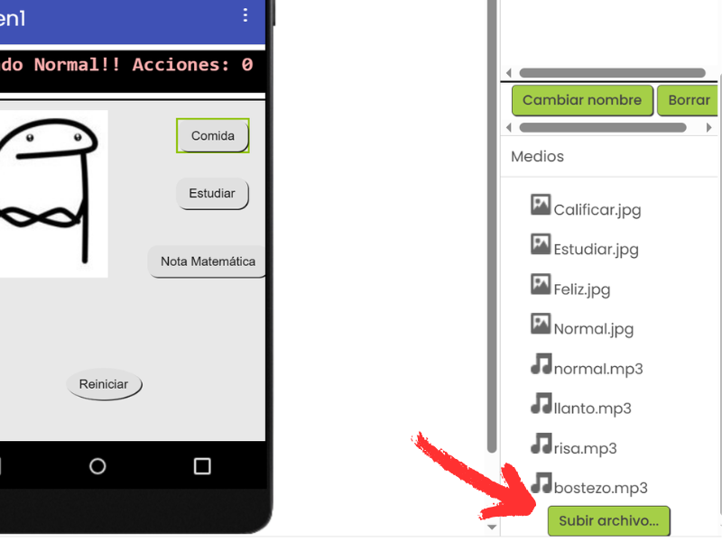
Imagen1) y configura su propiedad Foto a normal.jpg.
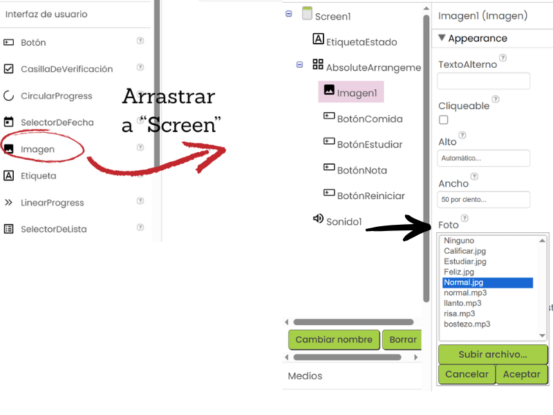
EtiquetaEstado) con texto inicial "¡Estado normal! Acciones: 0".
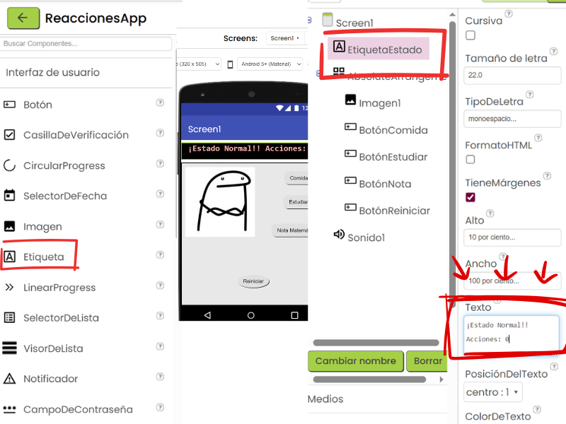
Sonido1) desde el menú "Medios" en el modo diseñador y configura su propiedad Origen a neutro.mp3.
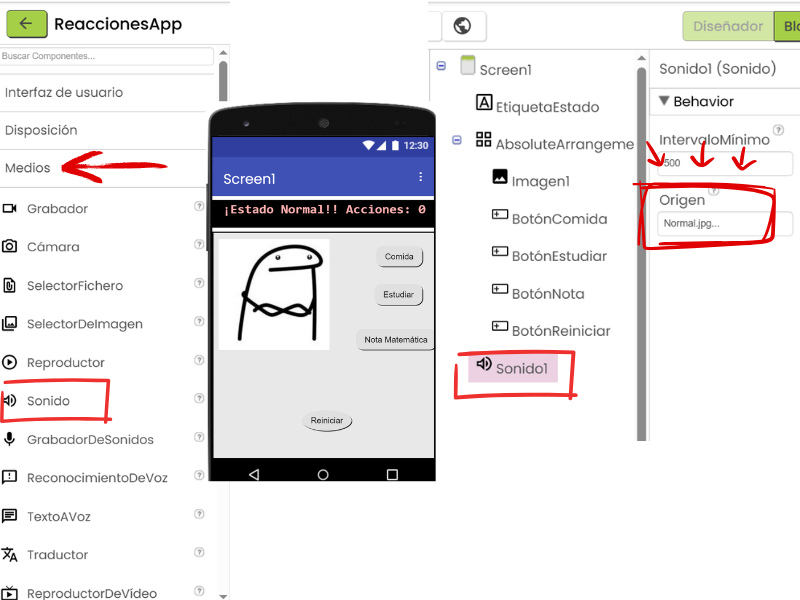
AbsoluteArrangement, e introduce al interior los anteriores elementos (4 botones y la imagen, si quieres puedes insertar la etiqueta adentro igual).
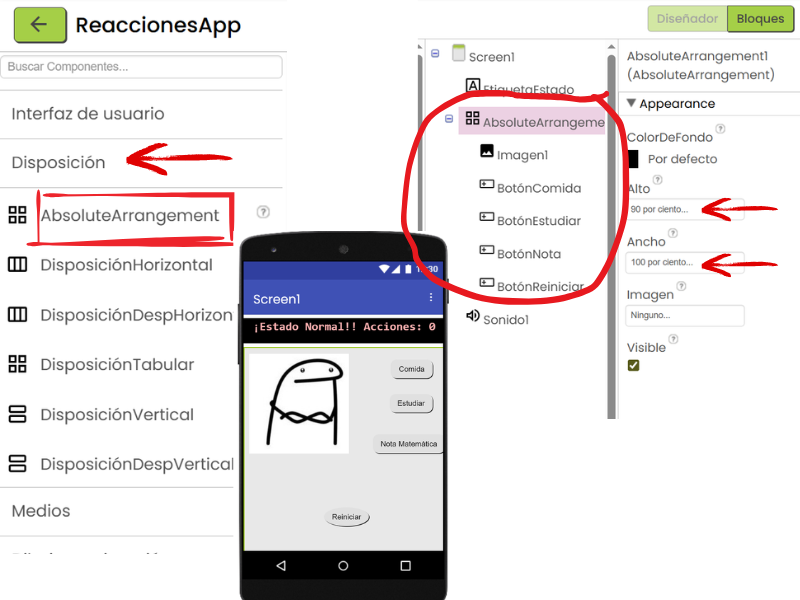
contadorAcciones (inicializar en 0).
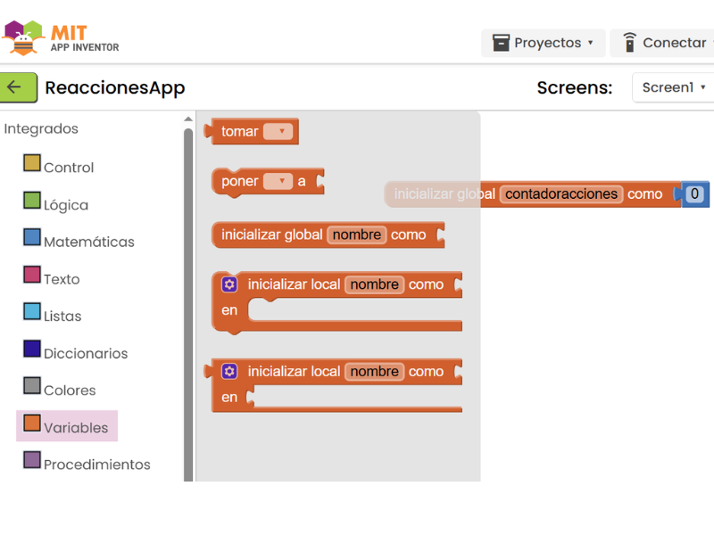
BotónComida.Click:
Imagen1.Foto como feliz.jpg.globalcontadorAcciones a globalcontadorAcciones + 1.EtiquetaEstado.Texto como --unir: "¡Mmm, qué rico! Acciones: " unido a tomar globalcontadorAcciones.Sonido1.Origen como risa.mp3 y llamar el sonido1.reproducir.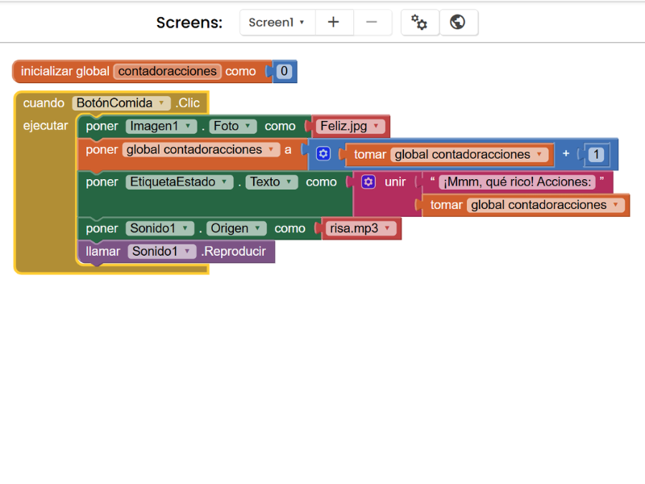
BotónComida.Click para los otros botones (BotónEstudiar, BotónNota, BotónReiniciar), debes duplicar un total de 3 veces, y cambia los elementos según el Ejemplo del GIF:
BotónEstudiar.Click:
BotónComida por BotónEstudiar.feliz.jpg por aburrido.jpg.risa.mp3 por bostezo.mp3.BotónNota.Click:
BotónComida por BotónNota.feliz.jpg por triste.jpg.risa.mp3 por llanto.mp3.BotónReiniciar.Click:
BotónComida por BotónReiniciar.feliz.jpg por normal.jpg.risa.mp3 por neutro.mp3.globalcontadorAcciones.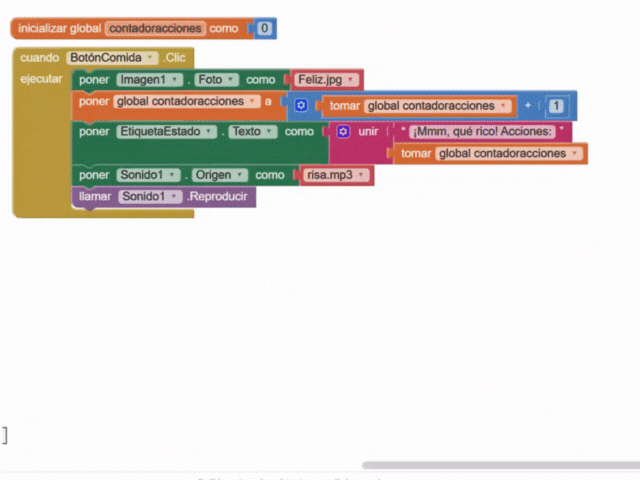
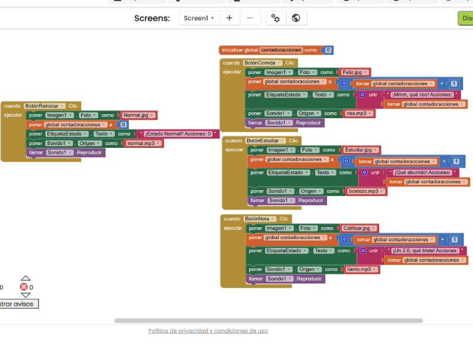
Has completado la Clase 3 y creado una app que muestra las reacciones de un personaje a diferentes acciones. Descarga tu proyecto en formato .aia desde App Inventor y súbelo a Google Classroom para compartirlo conmigo. ¡Sigue explorando App Inventor!